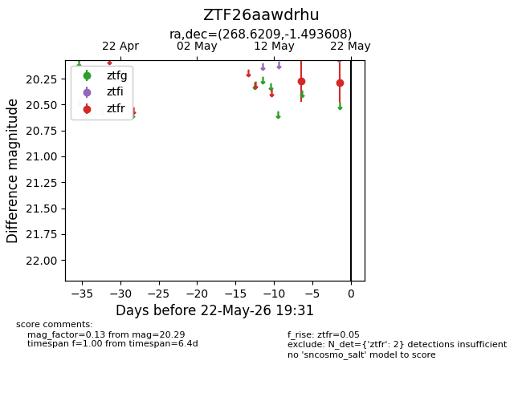
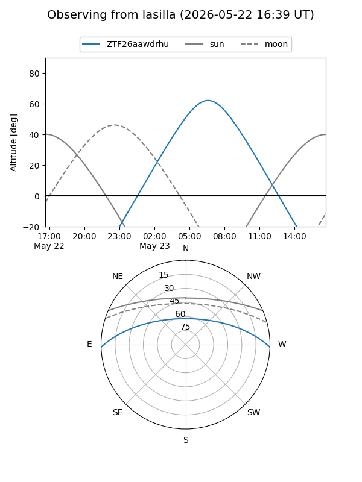
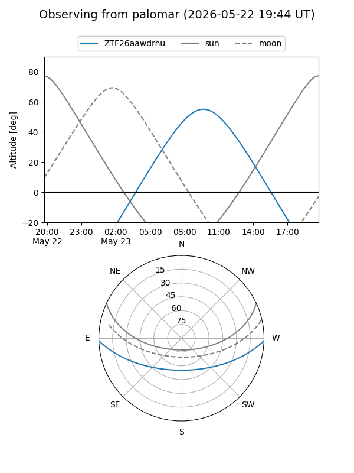

ZTF26aawdrhu
Target ZTF26aawdrhu at 2026-05-22 19:33
Aliases and brokers:
lsst-FINK: link
lsst-Lasair: link
lsst-ALeRCE: link
ztf-FINK: link
ztf-Lasair: link
ztf-ALeRCE: link
alt names
ZTF26aawdrhu (ztf,fink_ztf)
Coordinates:
equatorial (ra, dec) = 268.6209,-1.49361
equatorial (HMS+DMS) = 17:54:29.02,-01:29:36.99
galactic (l, b) = (24.9820,+11.94316)
Flags:
Photometry:
last ztfr=20.29
2 ztfr detections
Lightcurve

Visibility


Additional plots